建筑是凝固了的诗，但它比诗更华美，更厚重，更感人至深。任何建筑，反映的不仅是那个时代的建筑科学与技术的发展水平。还折射出了那个时代人们的精神风貌与审美情趣，立体地反映出时代的价值观与生活方式。建筑不仅是技术与艺术的结合，还渗透着由历史积淀而来的人文情怀。中国的古建筑美轮美奂,每个不起眼的角落,都存在着古代先人艺术的结晶。
一、冀长城
1.了解长城
长城是冷兵器时代举世闻名的军事防线，也是我国历史上塞外游牧文化与中原农耕文化之间的分界线。长城沿线的城墙、关隘、敌台、烽燧与人类活动相互交融，最终形成了一条充溢着物质文化与非物质文化色彩的“长城文化带”。
2.长城故事
有一天秦始皇下令把所有年轻的男人都抓起来让他们来修筑长城，其中也有孟姜女的丈夫，过了几年后，孟姜女很着急，然后孟姜女就去找自己的丈夫，孟姜女到修筑长城的地方，修筑长城的工程师说：范杞梁他已经死了。孟姜女一听，马上就哭了起来了，就在这时突然下起倾盆大雨长城马上就倒了八百里。
孟姜女万里寻夫送寒衣，哭倒长城八百里的故事家喻户晓，流传至今。相传她哭倒的长城正是位于河北省秦皇岛市的山海关长城，人们为纪念她，在山海关附近的一个山头上，给她修了坟、建了庙，取名为"姜女庙"。这座庙已经成为河北省第一批重点文物保护单位。
3. 河北长城
虽然河北省的台标是长城标志，但一说到长城，人们首先想到的往往是位于北京市延庆区的八达岭长城，其实，万里长城总长超过2.1万千米，横跨15省区市，在河北境内的长度才是最长的，达2000多公里。
河北境内长城精华地段20余处，大小关隘200多处，是长城保存最为完整最具代表性的区段。河北境内的长城给人们带来了诉说不完的熠熠闪光的历史和文化，她已成为河北乃至中国和世界人民不可缺少的精神食粮。
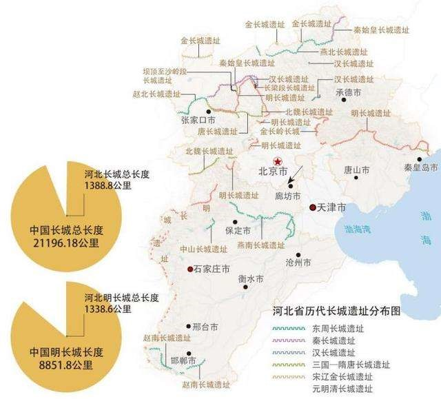
4.长城精神
长城最突出、最核心的价值在于它所承载的伟大精神，这种精神包括团结统一、众志成城的爱国精神；坚韧不屈、自强不息的民族精神；守望和平、开放包容的时代精神。这三大精神历经岁月锤炼，已深深融入中华民族的血脉之中，成为实现中华民族伟大复兴的强大精神力量。
河北境内的长城承载着如此深厚的历史积淀，如此丰富文化内涵，值得学者深入研究，值得大众细细品鉴，更值得我们花大力气去保护与发扬。
长城是促进文化交流的纽带，是增加民众友谊的桥梁，希望本次线上展会的举办，能让同学们以及国内外游客更多地了解长城河北段的独特文化魅力，更多地来河北长城旅游，大家携手，共同把长城这一人类文化的宝贵财富保护好、传承好、宣传好，共同开启冀长城文化的新时代。
视频（选自了不起的冀长城）
二、石家庄古建筑
1.赵州桥
赵州桥又名安济桥（宋哲宗赐名，意为“安渡济民”），坐落在河北省赵县洨河上横跨洨水南北两岸。赵州桥建于隋朝大业元年至十一年（605——616），由著名匠师李春设计建造，距今已有一千四百多年的历史，其间经历数次地震、战争、洪水的考验，仍然巍然屹立在洨河上。
赵州桥是中国第一座石拱桥，也是当今世界上现存最早、保存最完整的古代敞肩石拱桥。桥长50.82米，跨径37.02米，劵高7.24米，两端宽9.6米，全桥只有一个大拱，长达37.4米。
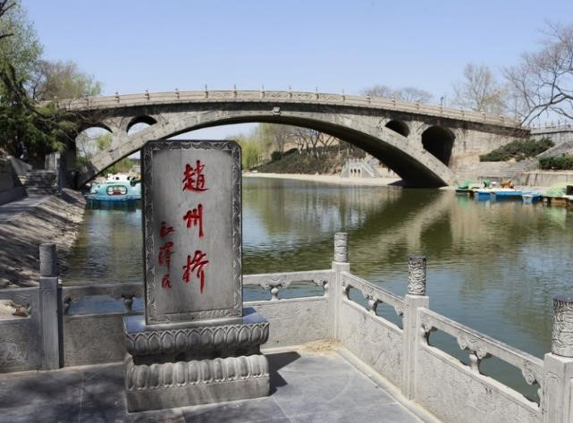
赵州桥有着悠久的历史和独特。赵州桥的建造距已有一千四百多年的历史，至今依然存在。赵州桥的设计，在建桥史上是一个创举，以前的桥都没有设计过桥身上加小桥洞，赵州桥却有这种独创的设计，不仅在外形上更美观，在防洪和减少用料的实际用途上，也颇见成效。
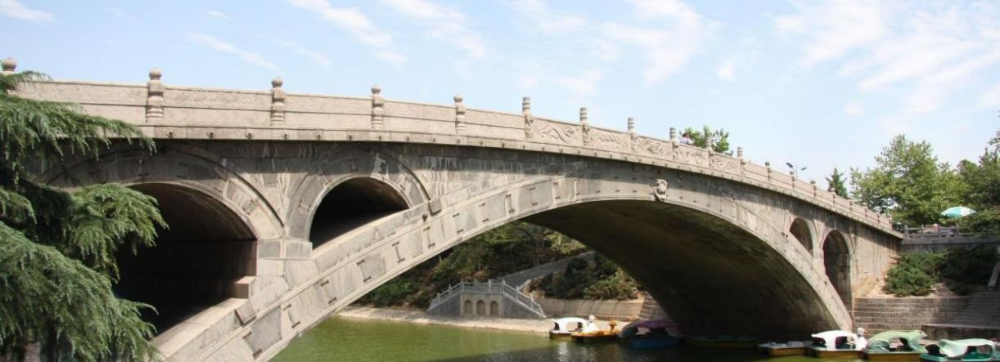
没有桥墩、只有一个拱形大桥洞。第二个特点是大桥洞顶上的左右两边各有两个小桥洞。这样的设计，既能减轻流水对身的冲击，使桥不容易被大水冲毁，又减轻了桥身的重量，节省了石料。
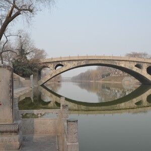
赵州桥的敞肩圆弧拱形式是中国劳动人民的一大创造，西方在14世纪才出现敞肩圆弧石拱桥，已经比中国晚了600多年。 李春是中国隋代著名的桥梁工匠，举世闻名的赵州桥就是他最伟大的杰作，这个浓缩了中华人民智慧结晶的标志性桥梁，开创了中国桥梁建造的崭新局面，为中国桥梁技术的发展作出了巨大贡献。
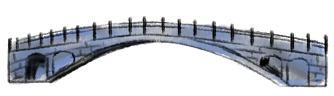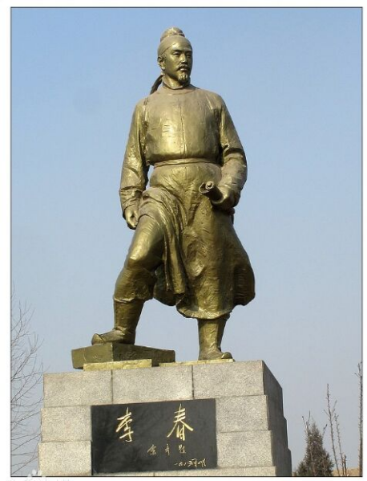
1961年3月4日，安济桥（大石桥）被中华人民共和国国务院公布为第一批全国重点文物保护单位。2010年，赵州桥景区被评为国家AAAA级旅游景区。
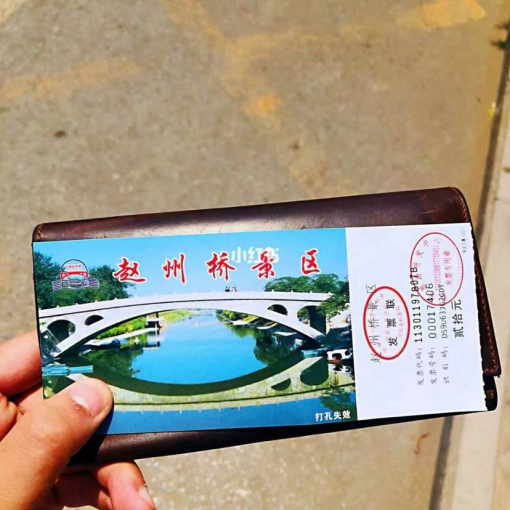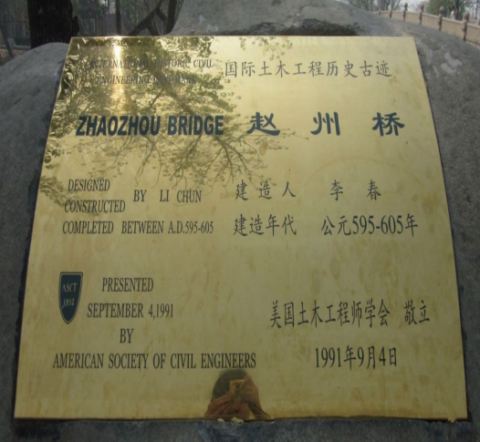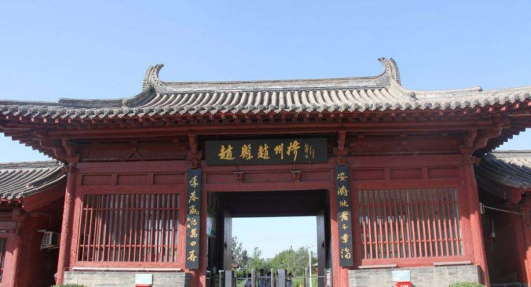
2.正定隆兴寺
隆兴寺，别名大佛寺，位于河北省石家庄市正定县城东门里街，原是东晋十六国时期后燕慕容熙的龙腾苑。公元586年(隋文帝开皇六年)在苑内改建寺院，时称龙藏寺，唐朝改为龙兴寺，清朝改为隆兴寺，是中国国内保存时代较早、规模较大而又保存完整的佛教寺院之一。寺院占地面积82500平方米，大小殿宇十余座，分布在南北中轴线及其两侧，高低错落，主次分明，是研究宋代佛教寺院建筑布局的重要实例。
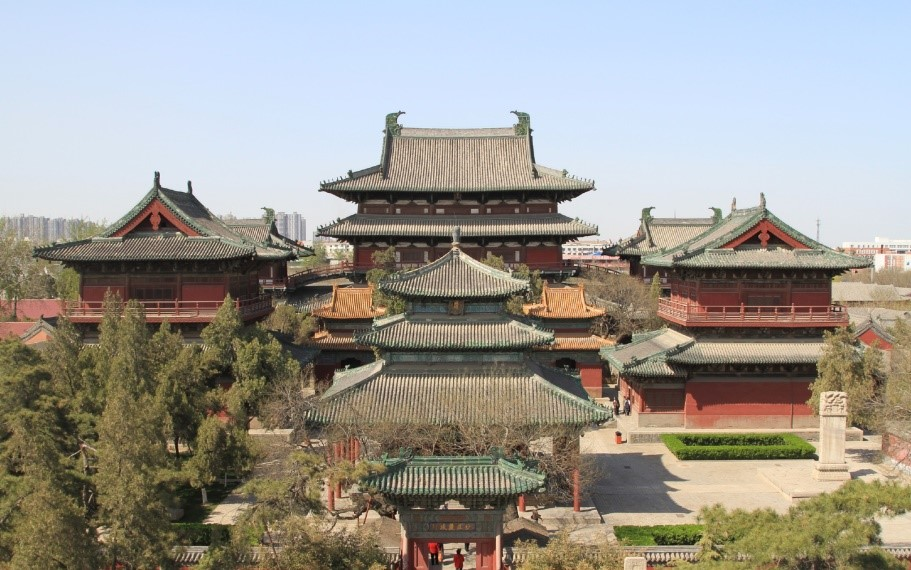
隆兴寺六绝：摩尼殿、千手观音像、五彩悬塑倒坐观音像、宋代转轮藏阁、毗卢佛铜造像、隋龙藏寺碑
（1）摩尼殿
摩尼殿，始建于北宋皇祐四年（1052年），重檐歇山顶，大殿布局奇特，正方形殿身四面正中各出一山面向外的歇山顶抱厦，使平面形成“十”字形，宋代称之为“龟头屋”，为宋《营造法式》之典范，梁思成先生赞其为我国现存古代建筑中“艺臻极品”。
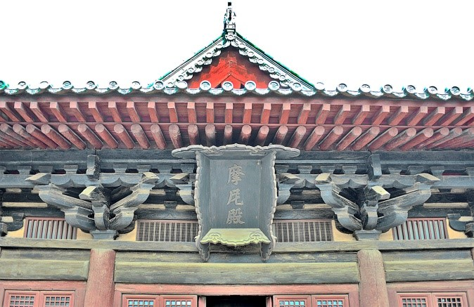
（2）千手观音像
隆兴寺大悲阁内供奉的铜铸千手千眼观世音菩萨立像，通高21.3米，铸造于北宋开宝四 年（971年），是世界上古代铜铸佛像中最高大、最古老的千手千眼观世音菩萨像。不过佛像两侧的手臂均是后补上去的，也是木质的了。
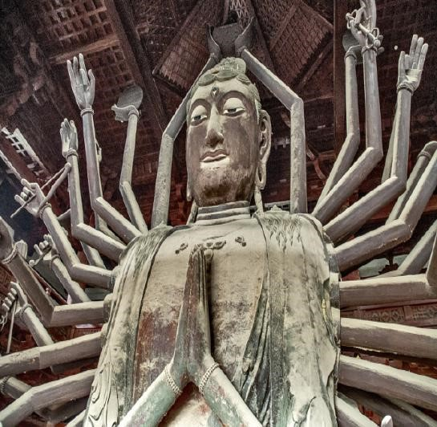
（3）五彩悬塑倒坐观音像
宋代五彩悬塑倒坐观音被称之为中国最美的观音。端庄恬静的自在观世音菩萨塑像，重塑于明嘉靖四十二年（1563）。观音像左足踏莲，右腿踞起，两手抱膝，身体稍向前倾斜，面容恬静，柳眉之下，那双智慧深邃的眼睛微微俯视，恰与礼佛者仰视时形成感情上的交流。鲁迅称之为“东方美神”（其故居案头有购于山本赞七郎的照片），但是鲁迅说是木雕，看来鲁迅没有去过现场观看。
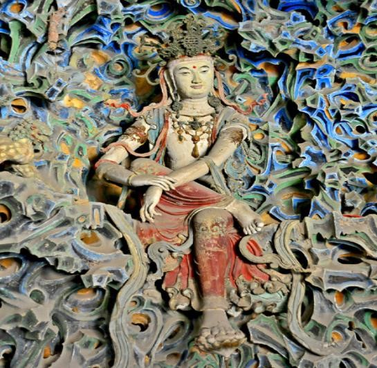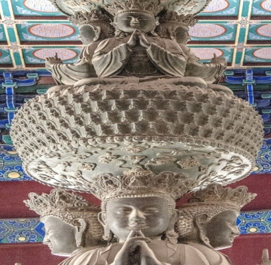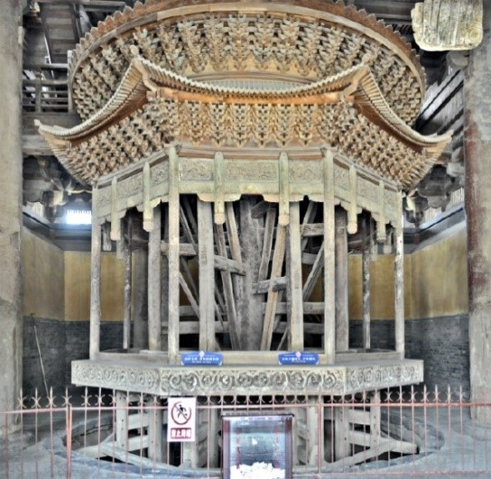
（4）宋代转轮藏阁
转轮藏阁内安放的宋代转轮藏，八角形小木制作，直径7米，正中立轴。经橱以上为重檐，下檐八角，斗拱式样为八铺作，为我国早期斗拱出跳最多的实例。上檐圆，出飞檐，是典型的宋《营造法式》作法，为国内最古老、最大的藏经橱。
（5）毗卢佛铜造像
毗卢佛铜造像是从崇因寺移来隆兴寺的，是明神宗与生母李太后所造，举高6.42米，自下而上逐层渐收，似一座宝塔，表层均鎏金，整体共计1072尊佛像，是国内同类造像中最精美的一座。确实比我看到的北京法源寺、万寿寺内的毗卢佛造像都精美。
（6）隋龙藏寺碑
隆兴寺内的隋龙藏寺碑是国内现存楷书碑刻鼻祖。此碑刻刻于隋开皇六年（586年），是研究魏隶向楷书过渡时期书法艺术的重要碑刻，碑首高82厘米，阴刻楷书“恒州刺史鄂国公为国劝造龙藏寺碑”，康有为则称其为“隋碑第一”，后人称“楷书之祖”。
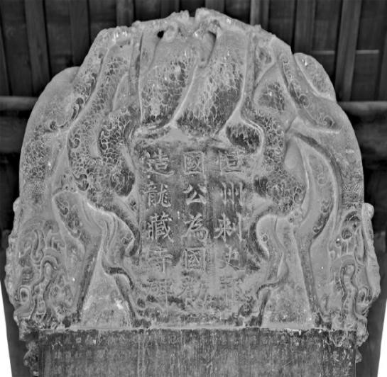
（选自绿洲）
三、邯郸古建筑
一、娲皇宫
娲皇宫，位于河北省邯郸市涉县中皇山上，占地面积5平方公里，由服务区、补天园、补天湖、娲皇宫和补天谷五个园区组成，是神话传说中女娲 “抟土造人、炼石补天”的地方，是我国建筑规模最大、肇建时间最早的祀奉人类始祖女娲的古代建筑群 。
娲皇宫始建于北齐时期，初为北齐文宣帝高洋所建离宫，初开三石室，雕数尊神像。后经历代修葺续建，娲皇宫现今占地面积达76万平方米。如今建筑多为明清时期，而北齐遗迹，仅留石窟与摩崖刻经，共6部，是中国现存摩崖刻经中最早、字数最多的一处。
每年农历三月初一至三月十八，为当地的庙会，女娲祭典之日。是时全国多地的人以及海外华侨前来祭拜华夏族人文先始，是中国规模最大、肇建时间最早、影响地域最广的奉祀女娲的历史文化遗存，被誉为“华夏祖庙”，为全国祭祖圣地之一。
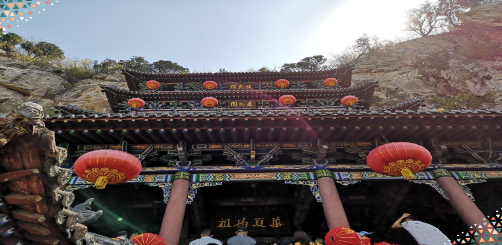
1996年娲皇宫列为全国重点文物保护单位。2015年10月15日被评为国家AAAAA级旅游景区。2012年娲皇宫景区列为国家级风景名胜区。
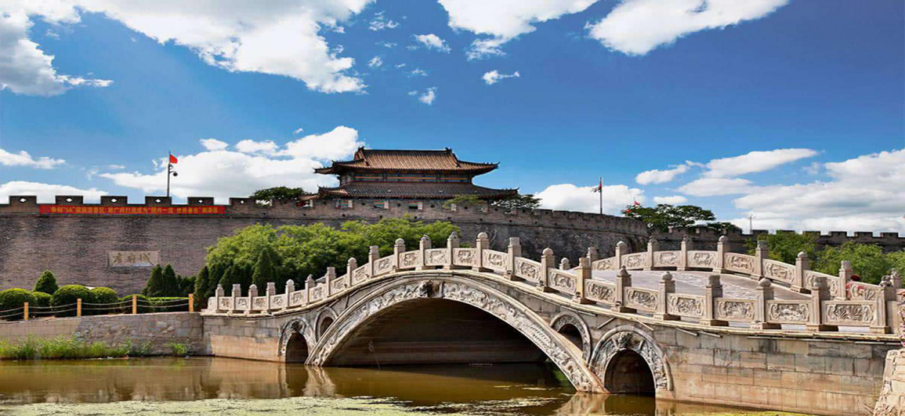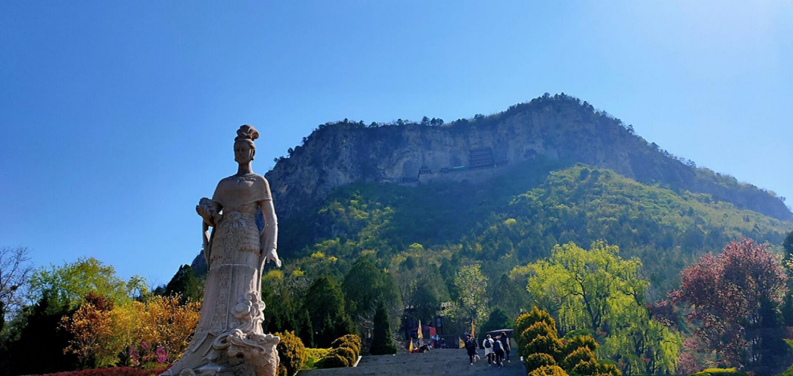
2.广府古城
广府古城，位于邯郸市东北25公里广府县广府镇，又称广平府城，始筑于隋末，距今已有2000多年的历史。历史上曾吸引无数达宦显贵、文人墨客流连忘返。广府古城还是一座水城，周围是万亩洼地和一望无际的芦苇，四面环水，具有北方罕见的秀美水乡风光。地势北高南低，水能自流，历史上是著名的天然水产养殖场。永年洼老潭淀区和护城河等深水水域将实施鲫鱼、河虾、河蟹人工增殖放流，在洼淀浅水区栽培芦苇、莲藕、芡实等水生植物，广府古城将再现水中城的美景。这里还是杨式、武式太极拳的发祥地。是集古城、水城、太极城于一体的名城，杨式太极拳创始人杨露禅、武式太极拳创始人武禹襄的故居保存完好。2017年，晋升为5A级旅游景区。
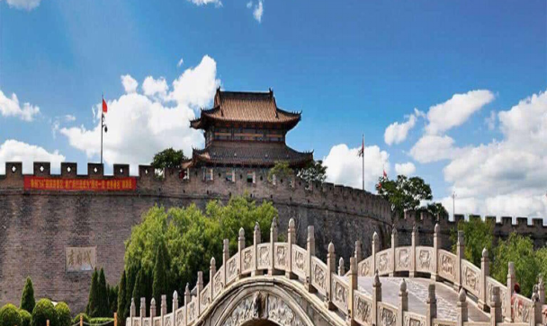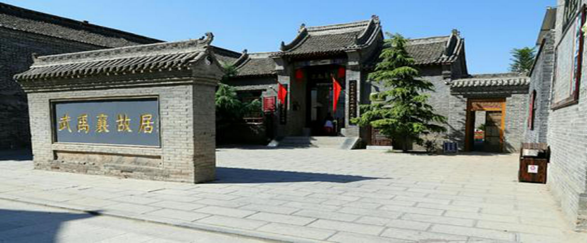
3.丛台
相传丛台始建于战国赵武灵王时期（公元前325年--299年），是赵王检阅军队与观赏歌舞之地，古称”武灵丛台“。颜师古《汉书注》称，因楼榭台阁众多而”连聚非一“，故名”丛台“台上原有天桥、雪洞、花苑、妆阁诸景，结构严谨，装饰美妙，曾名扬列国。现存古台雄伟壮观，是明清以来的修复建筑，虽已非原貌，但仍不失古典亭榭的独特风格。它是赵都历史的见证，成为古城邯郸的象征。
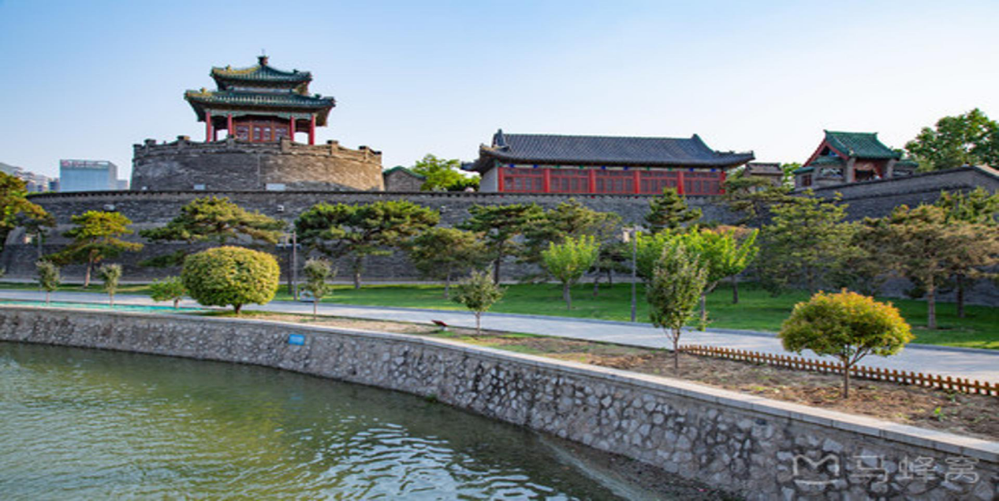
闻名遐迩的武灵丛台，历代文人骚客题诗赋咏，尽情抒怀。1750年9月清乾隆皇帝巡行江南过邯郸登丛台写道"传闻好事说丛台，胜日登临霁景开。丰岁人民多喜色，高楼赋咏谢雄才。襟漳带沁真佳矣，雪洞天桥安在哉！烟树迷茫闾井富，为筹元气善滋培"。1961年秋，郭沫若先生游丛台时，挥笔写下了"邯郸市内赵丛台，秋日登临曙色开，照黛妆楼遗废迹，射骑胡服思雄才。太行阵地漳河外，烈士陵园滏水隈，现代经营基础厚，武安铁矿峰峰煤。"的诗句。这块诗碑就镶嵌在南门高阶的迎壁上。北门高阶上的大碑，是清乾隆的御笔诗碑。在丛台的第二层台面上，还建有纪念赵武灵王的武灵馆和小巧玲珑的回澜亭，周围还分立和台墙镶嵌有众多的碑碣。
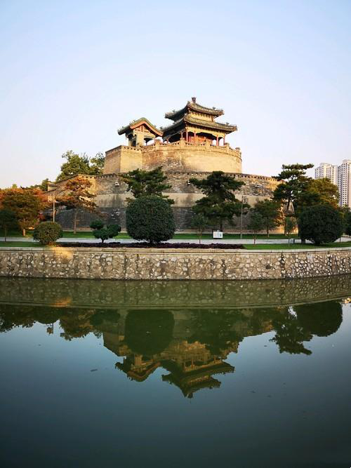
（选自发际线与我作队）
视频（选自发际线与我作队）
四、保定古建筑
保定，曾是直隶省会，直隶总督驻地，也是河北省最早的省会，从1669年至1968年，是河北的政治、经济、文化中心，为京津冀地区中心城市之一，位于华北平原北部、河北省中部，与北京、天津构成黄金三角，互成掎角之势，自古是“北控三关、南达九省、地连四部、雄冠中州”的“通衢之地”。
保定是国务院命名的中国历史文化名城，有深厚的文化底蕴，市区内拥有众多名胜：大慈阁、直隶总督署、清西陵、狼牙山、白洋淀、冀中冉庄地道战遗址、古莲花池等。保定市高等院校众多，有华北电力大学、河北大学、河北农业大学、中央司法警官学院 、河北金融学院、保定学院 等著名高校。
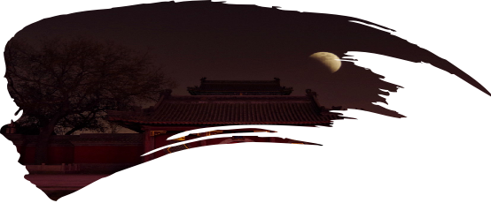
1.“黄金台”博物馆
是一个四层亭楼式修建，地下一层为文保所蕴藏室；一层为博物馆展厅；二层为文化馆、图书馆；三层为大殿展厅；四层为观景亭。黄金台博物馆坐北朝南，“黄金台”三个金色大字坐落在南门口正上方，工具南北四个方向口都有直梯纵贯四楼观景台。观景台正中心由特别的有机玻璃平铺而成，观景台正北偏向摆布各挺立着亭楼，小同伙们也踊跃的在仅限一人攀爬的旋转楼梯上往返穿梭、玩得不亦乐乎。
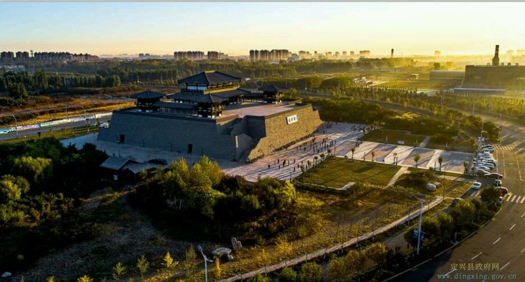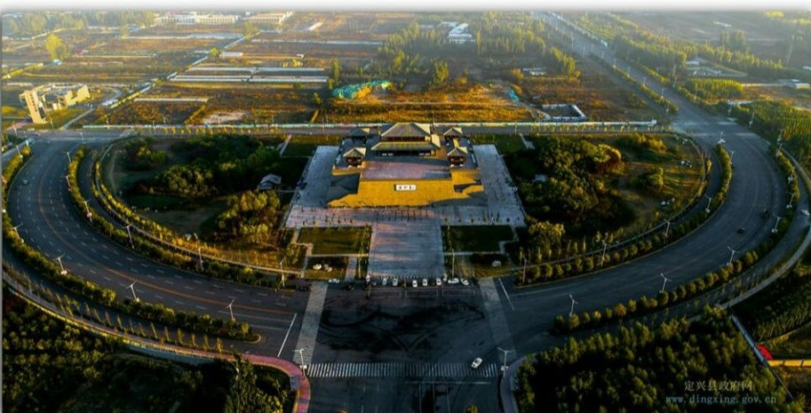
（选自保我定赢）
2.北岳庙
北岳庙坐落于河北保定市曲阳县城，始建于南北朝北魏宣武帝景明、正始年间，是汉代至清顺治十七年（公元1660年）历代封建帝王祭祀古北岳恒山之地，为官方祭祀专用场所。
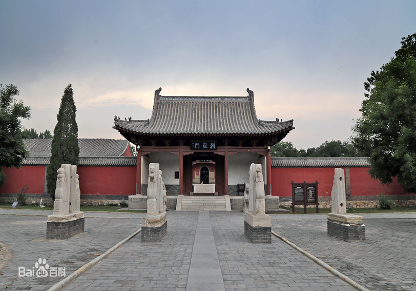
德宁之殿是北岳庙中的主体建筑，也是最大建筑，于元代至正七年（公元1347年）重建。德宁之殿的建筑，雄伟壮观。
它坐北朝南，占地2000多平方米，大殿通高25米，建筑在石砌的台阶之上，周围有白玉石栏杆，殿堂前有高大的月台，殿四周出廊，重檐庑殿式，琉璃瓦剪边和花脊，青瓦盖顶，整个建筑结构严谨，保存着宋、元时期的建筑特征，在建筑史上有着重要价值。
德宁之殿面宽9间，进深6间。因为德宁之殿多存元代的建筑风格，所以被确定为我国元代砖木结构中最大的古建筑。
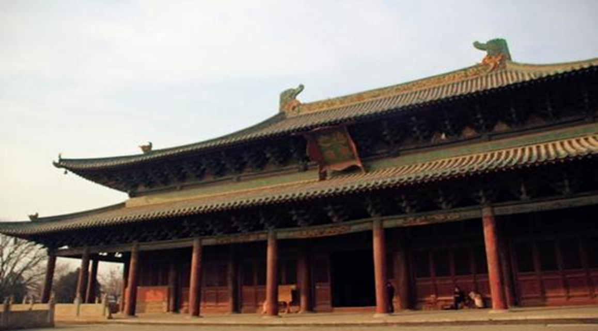
北岳庙集古建、绘画、书法、石雕、定瓷等艺术之花于一身，璀璨夺目，光彩照人，向世人展现出我们伟大祖先的勤劳、聪明和智慧。
当你漫步殿堂之中，一定会使你心旷神怡，感慨万千，体味到“真、善、美”的真谛；使你领略到我们中华民族优秀传统文化的博大精深。
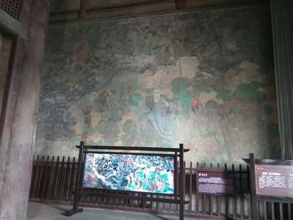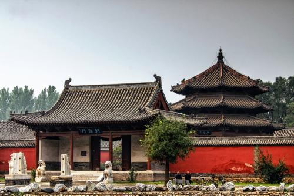
（选自绿洲）
五、承德古建筑——避暑山庄
承德避暑山庄：世界文化遗产，国家AAAAA级旅游景区，全国重点文物保护单位，中国四大名园之一。承德避暑山庄又名“承德离宫”或“热河行宫”，位于河北省承德市中心北部，武烈河西岸一带狭长的谷地上，是清代皇帝夏天避暑和处理政务的场所。
承德避暑山庄又名“承德离宫”或“热河行宫”，位于河北省承德市中心北部，武烈河西岸一带狭长的谷地上，是清代皇帝夏天避暑和处理政务的场所。 避暑山庄始建于1703年，历经清康熙、雍正、乾隆三朝，耗时89年建成。避暑山庄以朴素淡雅的山村野趣为格调，取自然山水之本色，吸收江南塞北之风光，成为中国现存占地最大的古代帝王宫苑。 避暑山庄分宫殿区、湖泊区、平原区、山峦区四大部分，整个山庄东南多水，西北多山，是中国自然地貌的缩影，是中国园林史上一个辉煌的里程碑，是中国古典园林艺术的杰作，是中国古典园林之最高范例。
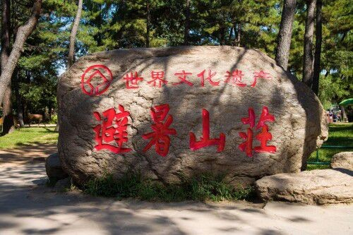
山庄整体布局巧用地形，因山就势，分区明确，景色丰富，与其它园林相比，有其独特的风格。山庄宫殿区布局严谨，建筑朴素，苑景区自然野趣，宫殿与天然景观和谐地融为一体，达到了回归自然的境界。山庄融南北建筑艺术精华，园内建筑规模不大，殿宇和围墙多采用青砖灰瓦、原木本色，淡雅庄重，简朴适度，与京城的故宫，黄瓦红墙，描金彩绘，堂皇耀目呈明显对照。山庄的建筑既具有南方园林的风格、结构和工程做法，又多沿袭北方常用的手法，成为南北建筑艺术完美结合的典范。
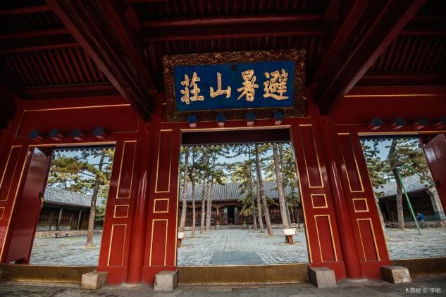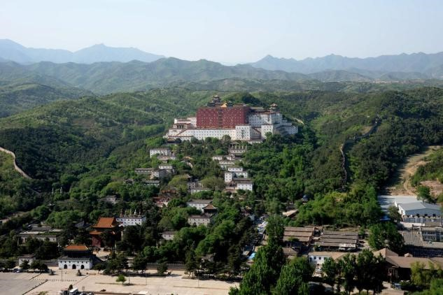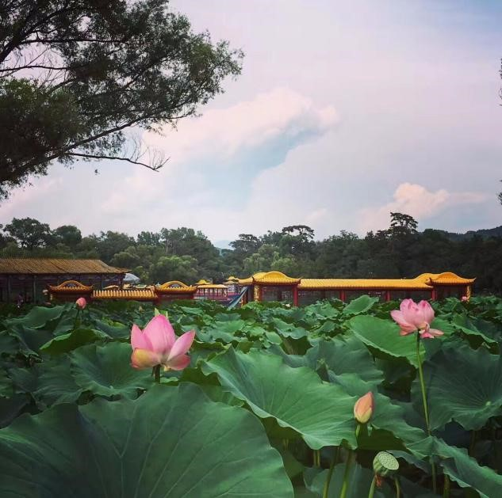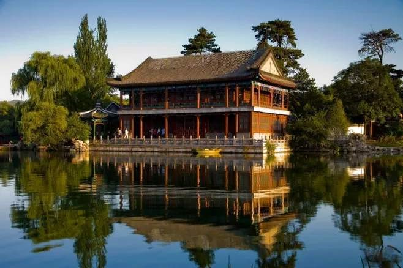
这里风光旖旎,景色宜人,山环水绕林木苍郁，名胜荟萃,景象万千.清代时为直隶承德府,是清朝皇帝的避暑山庄所在地.自清康熙以来,历经修葺,古貌新姿园林荟萃庙宇叠出,人文景观和自然景观交相辉映,犹如璀璨的珠翠镶嵌在神州大地北方.避暑山庄，以朴素淡雅为格调，取自然山水之本色，是宫苑一体的皇家园林，其景观意境“皆由圣心指点而成”。正是因为汇集了无数能工巧匠石破天惊的技艺，历经了三代君王八十九载的精雕细琢，占地达到564万平方米，是世界现存最大的皇家园林。
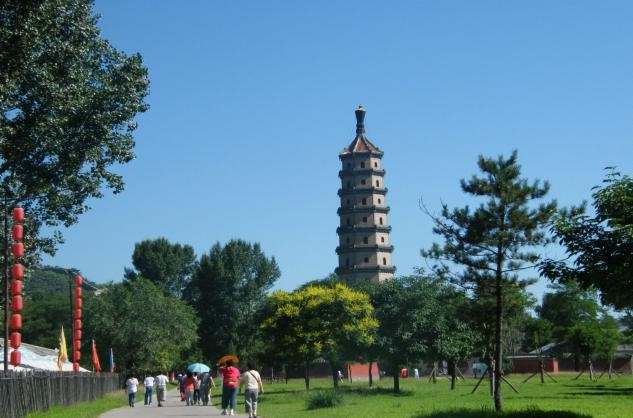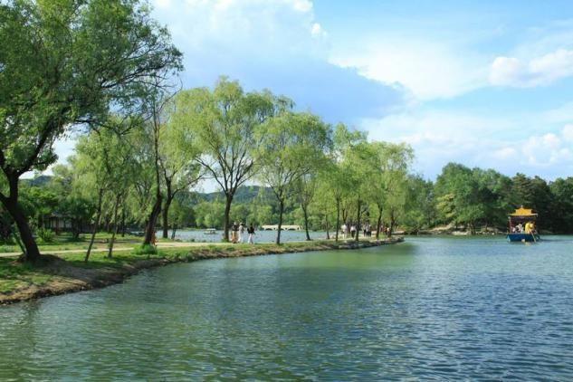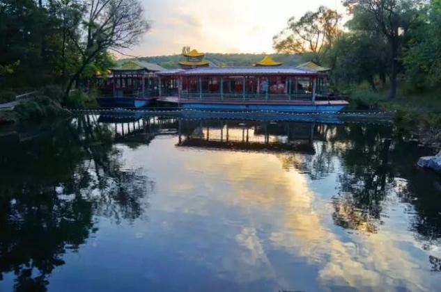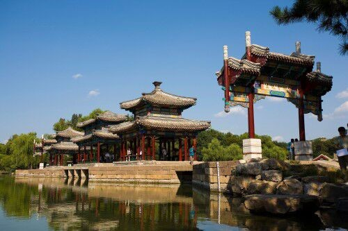
如今的避暑山庄，犹如一幅康乾盛世的写实画卷，徜徉园内，穿越三百余年，依然能闻到楠木宫殿的芬芳，见到引水围湖的澄澈，摸到平原草甸的葱茏，感到青山古树的荫凉。锤峰落照、避暑胜地、紫塞明珠、皇家园林、帝王之家、热河揽盛、南园北调、塞外桃园。
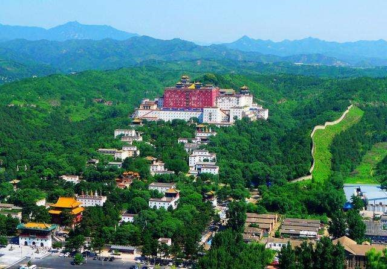
（选自超有文化小组）
六、沧州古建筑
1.沧州铁狮子
在华北一带流传着两句民谚：沧州铁狮子应州塔，正定菩萨赵州桥。它在河北沧县旧州城内原本的开元寺地址前，已经屹立了一千多年。他的右侧有“大周广顺三年铸”字样，即完工于北周广顺三年，右肋有“雕刻名将李云造”五字。
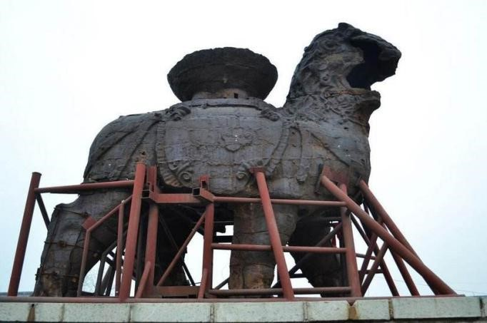
据说在古代沧州一带未必安地区海啸水患频发，为了镇妖没妖水管人们就集资备料，请来山东名将李芸铸造了他，并称他为镇海吼。
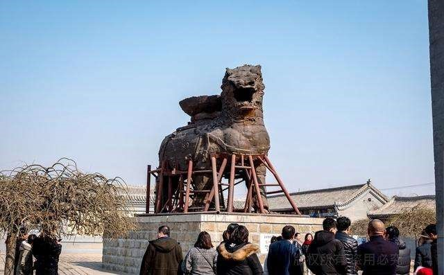
沧州铁狮子雕刻是我国古代最大的铸铁艺术品，身高达5.3米，仅头部就高1.5米，为了保护她，1984年，人在挪移时称量，他的体重发现它重达29.3吨。其头部雕刻有狮子王子样，实际上她也确实无愧于“狮王百兽之王”的称号，他的身上束着飘带，说明他不是野性难驯而是具有理性的勇猛而善良，这正是中华民族生气勃勃的精神象征。
2.沧州清风楼
沧州市清风楼位于解放路旁，大运河畔。据明代嘉靖年间樊深所著《河间府志》记载：清风楼在沧州公馆内，相传建于永康中，元萨天锡元统录囚至沧州，题诗《清风楼》，晋代繁华地，如今有此楼。暮云连海岱，明月满沧州。归鸟如云过，飞星拂瓦流。城南秋欲尽，寂寞采莲舟。
1楼：古运沧州——以运河为主题，展示康熙《运河全图》及运河沧州段八景。
2楼：魅力沧州——展示当代在物质文明和精神文明建设领域取得的成就。
3楼：诗韵沧州——展示沧州籍文人的传世诗词歌赋或书法作品。
4楼：风情沧州——展示沧州国家级的非物质文化遗产以及以沧州获得国家地理保护标志产品为代表的沧州土特产。
5楼：景观沧州——展示沧州地区的文物古迹。
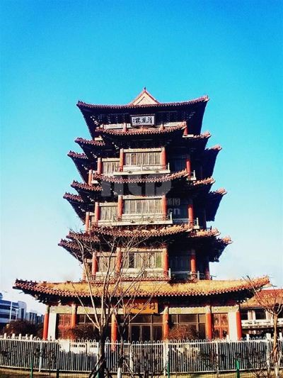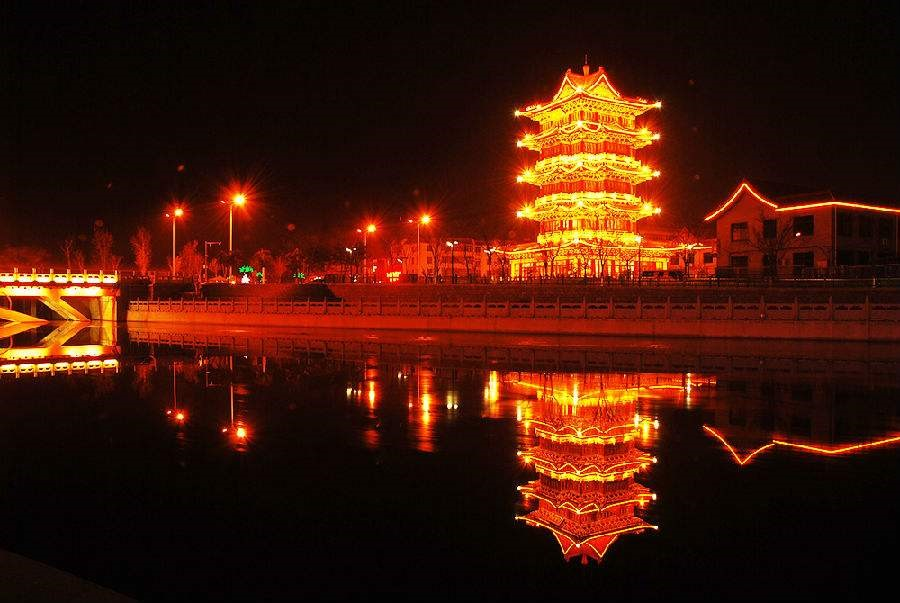
3.河间府衙
河间府衙又名河间府署，始置于北宋大观二年，规模宏大，远近闻名。宋朝李素之为河间府署兴建第一人。自北宋置府以来，河间府、县并存计804年的历史。所以城内既设府衙又设县衙，直至辛亥革命废府存县。
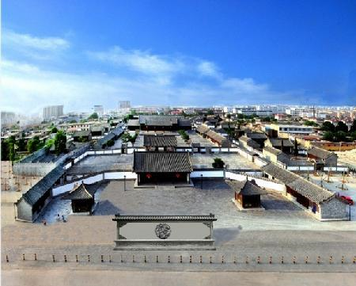
旧府衙座北朝南，衙前设高大照壁，照壁两侧建有辕门，辕门外有直通河间东西大街的甬路，临街有高大木牌坊，坊上雕刻有“燕赵雄风”四个大字。大门两侧有石狮一对。
大门附近有口水井。门口两侧墙壁上左边书“天下为公”，右边书“选贤与能”。大门内有门房，迎面有方杆旗斗两个，东西两侧有房舍，为隶卒居住，往里为仪门，仪门内为广庭甬道，两旁古柏参天，交相掩映，郁郁葱葱。西侧悬有大铜钟一个，镌有铭文，内含白金千两，声闻四十里，此钟后被侵华日军掠走。
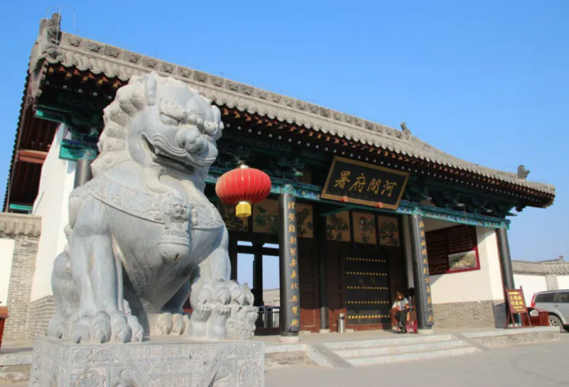
沿甬道北上，原有石台阶五级，上面建有殿堂，名曰大堂，原为府官审理案件之所，凡大堂审理的一般民事案件，允许民众旁听，借以显露“清官大老爷”的明断。
大堂正中悬有匾额，上书：“宝（保）釐堂”三个苍劲大字，据传是明朝严嵩所书。大堂两侧有厢房，为府官休息更衣之所。大堂前面立有戒石亭，碑石铭文：“尔俸尔禄，民膏民脂。下民易虐，上天难欺”。与厅内府官之坐相对。
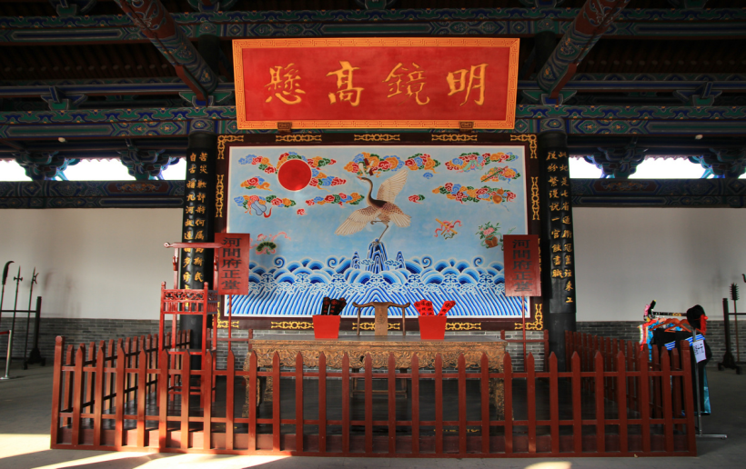
大堂后面为穿堂，过了穿堂是二堂，一些机密案件在此审理，不准民众旁听。二堂后便是内宅，为知府（旧称太守）眷属居住的地方。内宅东西各建有厢房是知府处理公文和接待宾客的地方。西跨院为神祠和同知署。东跨院为土地祠与经历署。
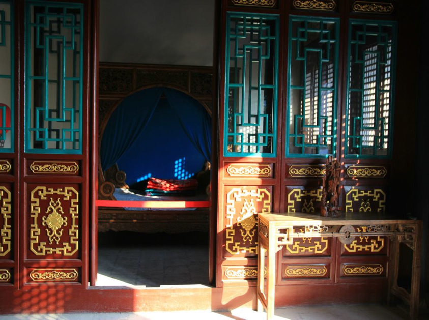
府衙门前之大影壁。高约七米，宽十米。辛亥革命后，影壁南面绘有孙中山先生像。影壁北面书写《礼记》上的“大同篇”一段，文曰：“大道之行也，天下为公，选贤与能，讲信修睦。故人不独亲，不独子其子。使老有所终，壮有所用，幼有所长，鳏寡孤独者，皆有所养。男有分，女有归，货恶其弃于地也，不必藏于己，力恶其不出于身也，不必为已，是为大同。”
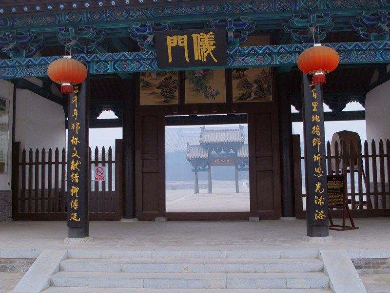
府衙向南，是府门口街，原来是一条繁华整洁的街道，街两旁饭店商肆林立，街南口建有木牌坊一座建于清雍正八年（1730年重修）是一座纯木制结构的建筑，飞檐斗拱，画栋雕梁，颇为壮观。当中主门，两侧耳门，可以南来北往，十分畅通。东西耳门上方各写“城真”、“正平”四字。正门上方写“燕赵雄风”四个大字，下面写着专员黄维诚题，实际这四个是城内王伯龙（举人）老先生书写的。建国以后，由河间师范教师白金华改写为“繁荣经济”四个大字，给这座古建筑赋予了时代意义。
视频（选自绿洲）
穿越千年时空，中国古建筑是凝聚历史与文化的艺术品，犹如画般的意境之美。北方的皇家建筑，红墙、红柱、黄瓦彩画，辉煌富丽，重彩金碧。南方园林寺观，白墙黑柱青瓦，好似水墨写意，全是文人的情趣。古建筑是人类宝贵的历史文化遗产，具有极高的历史价值、艺术价值和科学价值，建筑文化也是中国传统文化的一部分，作为炎黄子孙，我们不仅要发展现代建筑，更要吸收古建筑中的营养，走出中国特色建筑之路，让中国古建文化得以传承和延续！
注：一切解释权归廊坊师范学院会展经济与管理专业所有